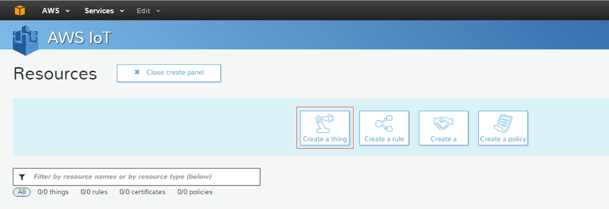
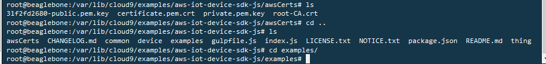

Main articles: Start here Grove IoT Starter Kits Powered by AWS , Beaglebone Green
BeagleBone Green (BBG) is a joint effort by BeagleBoard.org and Seeed Studio. It is based on the open-source hardware design of BeagleBone Black and has added two Grove connectors. The kit contains the new BBG, 10 Grove modules as well as step-by-step tutorials to hook them up quickly. The Grove IoT Starter Kit includes most frequently used sensors and actuators to turn your ideas into tangible applications with AWS Cloud computing.


| Board/Part | Qty | Documentation |
|---|---|---|
| BeagleBone Green | 1 | Read Here |
| Grove - I2C ADC | 1 | Read Here |
| Grove - I2C Hub | 1 | Read Here |
| Grove - Relay | 1 | Read Here |
| Grove - Buzzer | 1 | Read Here |
| Grove - OLED Display 0.96'' | 1 | Read Here |
| Grove - Button | 1 | Read Here |
| Grove - Temperature Sensor | 1 | Read Here |
| Grove - Sound Sensor | 1 | Read Here |
| Grove - 3-Axis Digital Accelerometer(±16g) | 1 | Read Here |
| Grove - Chainable RGB LED | 1 | Read Here |
| Micro USB Cable - 48cm | 1 |
At the very beginning, we need to get an AWS IoT service account, and do some configuring.


Now, this step is done. Let's move to the next step.
Connect BBG to your PC via micro USB cable, and let BBG access the Internet. If this is your first time to use BBG/BBB, maybe you can follow here to get started.
Connect Grove modules to BBG as the picture below shows.
We need unzip the SDK and move the keys to right place.
# cd examplesAnd unzip the SDK file.
# unzip aws-iot-device-sdk-js-latest.zipThen entering the unziped folder.
#cd aws-iot-device-sdk-jsInstall the dependent packages.
# npm install
Create a new folder named awsCerts.
# mkdir awsCerts && cd awsCertsAnd then move the 3 key files to the new folder.
# mv ../../31f2fd2680-* .Please note that 31f2fd2680 should be replaced by your own key files number.
And rename the key files
# mv 31f2fd2680-certificate.pem.crt.txt certificate.pem.crt # mv 31f2fd2680-private.pem.key private.pem.key
Download a file from the internet.
# wget https://www.symantec.com/content/en/us/enterprise/verisign/roots/VeriSign-Class%203-Public-Primary-Certification-Authority-G5.pemAnd rename the downloaded file as root-CA.crt.
#mv VeriSign-Class%203-Public-Primary-Certification-Authority-G5.pem root-CA.crt
Enter the examples folder.
# cd .. && cd examples/

Create a new file named grove_temperature_sensor.py.
# vim grove_temperature_sensor.py
And copy the following code to the file.
#!/usr/bin/python # -*- coding: utf-8 -*- import time import math import Adafruit_BBIO.GPIO as GPIO from Adafruit_I2C import Adafruit_I2C BUZZER = "P9_22" # GPIO P9_22 GPIO.setup(BUZZER, GPIO.OUT) # The threshold to turn the buzzer on 28 Celsius THRESHOLD_TEMPERATURE = 28 ADDR_ADC121 = 0x50 REG_ADDR_RESULT = 0x00 REG_ADDR_ALERT = 0x01 REG_ADDR_CONFIG = 0x02 REG_ADDR_LIMITL = 0x03 REG_ADDR_LIMITH = 0x04 REG_ADDR_HYST = 0x05 REG_ADDR_CONVL = 0x06 REG_ADDR_CONVH = 0x07 i2c = Adafruit_I2C(ADDR_ADC121) class I2cAdc: def __init__(self): i2c.write8(REG_ADDR_CONFIG, 0x20) def read_adc(self): "Read ADC data 0-4095." data_list = i2c.readList(REG_ADDR_RESULT, 2) #print 'data list', data_list data = ((data_list[0] & 0x0f) << 8 | data_list[1]) & 0xfff return data adc = I2cAdc() # The argument in the read_temperature() method defines which Grove board(Grove Temperature Sensor) version you have connected. # Defaults to 'v1.2'. eg. # temp = read_temperature('v1.0') # B value = 3975 # temp = read_temperature('v1.1') # B value = 4250 # temp = read_temperature('v1.2') # B value = 4250 def read_temperature(model = 'v1.2'): "Read temperature values in Celsius from Grove Temperature Sensor" # each of the sensor revisions use different thermistors, each with their own B value constant if model == 'v1.2': bValue = 4250 # sensor v1.2 uses thermistor ??? (assuming NCP18WF104F03RC until SeeedStudio clarifies) elif model == 'v1.1': bValue = 4250 # sensor v1.1 uses thermistor NCP18WF104F03RC else: bValue = 3975 # sensor v1.0 uses thermistor TTC3A103*39H total_value = 0 for index in range(20): sensor_value = adc.read_adc() total_value += sensor_value time.sleep(0.05) average_value = float(total_value / 20) # Transform the ADC data into the data of Arduino platform. sensor_value_tmp = (float)(average_value / 4095 * 2.95 * 2 / 3.3 * 1023) resistance = (float)(1023 - sensor_value_tmp) * 10000 / sensor_value_tmp temperature = round((float)(1 / (math.log(resistance / 10000) / bValue + 1 / 298.15) - 273.15), 2) return temperature # Function: If the temperature sensor senses the temperature that is up to the threshold you set in the code, the buzzer is ringing for 1s. # Hardware: Grove - I2C ADC, Grove - Temperature Sensor, Grove - Buzzer # Note: Use P9_22(UART2_RXD) as GPIO. # Connect the Grove Buzzer to UART Grove port of Beaglebone Green. # Connect the Grove - I2C ADC to I2C Grove port of Beaglebone Green, and then connect the Grove - Temperature Sensor to Grove - I2C ADC. if __name__ == '__main__': while True: try: # Read temperature values in Celsius from Grove Temperature Sensor temperature = read_temperature('v1.2') # When the temperature reached predetermined value, buzzer is ringing. if temperature > THRESHOLD_TEMPERATURE: # Send HIGH to switch on BUZZER GPIO.output(BUZZER, GPIO.HIGH) else: # Send LOW to switch off BUZZER GPIO.output(BUZZER, GPIO.LOW) print "temperature = ", temperature except KeyboardInterrupt: GPIO.output(BUZZER, GPIO.LOW) break except IOError: print "Error"
Create a new file named python_sensor.py.
#vim python_sensor.py
Copy the following code to the new file.
import socket import grove_temperature_sensor if __name__ == "__main__": client = socket.socket(socket.AF_INET, socket.SOCK_STREAM) client.connect(('127.0.0.1', 7000)) while True: temperature = grove_temperature_sensor.read_temperature('v1.2') print temperature client.sendall(str('%.2f'%temperature)) data = client.recv(1024) print data client.close() print 'Received', repr(data)
Create a new file named rgbled.js.
#vim rgbled.js
And copy the following code to the new file.
var exec = require('child_process').exec; var value = 0; exports.initpins = function(){ exec("echo 3 > /sys/class/gpio/export",function(error,stdout,stderr){ if(error) console.info('stderr : '+stderr); }); exec("echo out > /sys/class/gpio/gpio3/direction",function(error,stdout,stderr){ if(error) console.info('stderr : '+stderr); }); exec("echo 2 > /sys/class/gpio/export",function(error,stdout,stderr){ if(error) console.info('stderr : '+stderr); }); exec("echo out > /sys/class/gpio/gpio2/direction",function(error,stdout,stderr){ if(error) console.info('stderr : '+stderr); }); } digitalwrite = function(pin,state){ exec("echo "+state.toString()+" > /sys/class/gpio/gpio"+pin.toString()+"/value", function(error,stdout,stderr){ if(error) console.log('stderr : '+stderr); }); } sleep = function(sleepTime) { for(var start = +new Date; +new Date - start <= sleepTime; ) { } } clk = function(){ digitalwrite(2,0); sleep(2); digitalwrite(2,1); sleep(2); } sendByte = function(b){ for(var i = 0 ; i < 8 ;i++){ if((b & 0x80) != 0) digitalwrite(3,1); else digitalwrite(3,0); clk(); b = b << 1; } } setColor = function(red,green,blue){ var prefix = 0xc0; if((blue & 0x80) == 0) prefix |= 0x20; if((blue & 0x40) == 0) prefix |= 0x10; if((green & 0x80) == 0) prefix |= 0x08; if((green & 0x40) == 0) prefix |= 0x04; if((red & 0x80) == 0) prefix |= 0x02; if((red & 0x40) == 0) prefix |= 0x01; sendByte(prefix); sendByte(blue); sendByte(green); sendByte(red); } exports.setColorRGB = function(led,red,green,blue){ sendByte(0x00); sendByte(0x00); sendByte(0x00); sendByte(0x00); for(var i = 0; i < led; i++ ){ setColor(red,green,blue); } sendByte(0x00); sendByte(0x00); sendByte(0x00); sendByte(0x00); console.log("set rgb"); } test = function(){ initpins(); while(1){ console.log("loop"); setColorRGB(1, 255, 0, 0) setColorRGB(1, 0, 255, 0) setColorRGB(1, 0, 0, 255) setColorRGB(1, 0, 255, 255) setColorRGB(1, 255, 0, 255) setColorRGB(1, 255, 255, 0) setColorRGB(1, 255, 255, 255) } }
Create a new file named shadow.js.
#vim shadow.js
Copy the following code to the new file.
var awsIot = require('..'); var net = require('net'); var rgbled = require('./rgbled.js'); var exec = require('child_process').exec; var myThingName = 'temperature'; var thingShadows = awsIot.thingShadow({ keyPath: '/var/lib/cloud9/examples/aws-iot-device-sdk-js/awsCerts/private.pem.key', certPath: '/var/lib/cloud9/examples/aws-iot-device-sdk-js/awsCerts/certificate.pem.crt', caPath: '/var/lib/cloud9/examples/aws-iot-device-sdk-js/awsCerts/root-CA.crt', clientId: 'myAwsClientId', region: 'us-west-2' }); var HOST = '127.0.0.1'; var PORT = 7000; var temperature = 25; var red = 0; var green = 0; var blue = 0; // Create a server instance, and chain the listen function to it net.createServer(function(socket) { console.log('CONNECTED: ' + socket.remoteAddress +':'+ socket.remotePort); // Add a 'data' event handler to this instance of socket socket.on('data', function(data) { console.log('DATA ' + socket.remoteAddress + ': ' + data); temperature = data.toString().substr(0,5); socket.write('This is your request: "' + data + '"'); }); // Add a 'close' event handler to this instance of socket socket.on('close', function(data) { console.log('Socket connection closed... '); }); }).listen(PORT, HOST); // // Thing shadow state // var rgbLedLampState = {"state":{"desired":{"red":187,"green":114,"blue":222,value:25}}}; // // Client token value returned from thingShadows.update() operation // var clientTokenUpdate; thingShadows.on('connect', function() { // // After connecting to the AWS IoT platform, register interest in the // Thing Shadow named 'RGBLedLamp'. // thingShadows.register( myThingName ); // // 2 seconds after registering, update the Thing Shadow named // 'RGBLedLamp' with the latest device state and save the clientToken // so that we can correlate it with status or timeout events. // // Note that the delay is not required for subsequent updates; only // the first update after a Thing Shadow registration using default // parameters requires a delay. See API documentation for the update // method for more details. // exec('python python_sensor.py',function(error,stdout,stderr){ if(stdout.length >1){ console.log('you offer args:',stdout); }else { console.log('you don\'t offer args'); } if(error) { console.info('stderr : '+stderr); }}); rgbled.initpins(); setTimeout( function() { clientTokenUpdate = thingShadows.update(myThingName, rgbLedLampState ); }, 2000 ); }); setInterval(function(){ new_data = {"state":{"desired":{"red":187,"green":114,"blue":222,value:temperature.toString()}}}; //new_data = {"state":{"desired":{"value":temperature.toString()}}}; console.log(new_data); clientTokenUpdate = thingShadows.update(myThingName, new_data ) },2000); thingShadows.on('status', function(thingName, stat, clientToken, stateObject) { console.log('received '+stat+' on '+thingName+': '+ JSON.stringify(stateObject)); }); thingShadows.on('delta', function(thingName, stateObject) { console.log('received delta '+' on '+thingName+': '+ JSON.stringify(stateObject)); //console.log(stateObject["state"]); if(stateObject["state"]["red"] != red || stateObject["state"]["green"] != green|| stateObject["state"]["blue"] != blue) rgbled.setColorRGB(1,stateObject["state"]["red"], stateObject["state"]["green"], stateObject["state"]["blue"]); red = stateObject["state"]["red"]; green = stateObject["state"]["green"]; blue = stateObject["state"]["blue"]; }); thingShadows.on('timeout', function(thingName, clientToken) { console.log('received timeout '+' on '+thingName+': '+ clientToken); });
Please note that, the value of myThingName in the 5 line should be the same as your Thing name that you have already create before in your AWS account.
When the BBG reboot done, run the code.
# cd examples/aws-iot-device-sdk-js/examples/ # node shadow.js
Then let's open AWS IoT website, sign in to your account. And click the thing you created minutes ago. Now you can see the temperature was upload to website.
If you want change the grove chainable led color. You can update the shadow value. eg:
You can see the BBG get the new RGB value.
And the Grove - Chainable RGB LED alse turned into green.
Put hand on AWS IoT Services Getting Started Guide to get more information about AWS IoT.
Please update the latest software if you can't open 192.168.7.2.
Step #1: Download the latest software image.
Updated time: 11/15/15
Download the latest image from google drive
Step #2: Install compression utility
Download and install 7-zip.
Step #3: Decompress the image
Use 7-zip to decompress the .img file on the desktop or other folder.
Step #4: Install SD card programming utility
Download and install Image Writer for Windows. Be sure to download the binary distribution.
Step #5: Connect SD card to your computer
Use an 8G microSD card at least to SD adapter or a USB adapter to connect the SD card to your computer.
Step #6: Write the image to your SD card
Use either the Ubuntu Image Writer or instructions on its page to write the decompressed image to your SD card.
Note: You may see a warning about damaging your device. This is fine to accept as long as you are pointing to your SD card for writing.
Note: You should not have your BeagleBone connected to your computer at this time.
Step #7: Eject the SD card
Eject the newly programmed SD card.
Step #8: Boot your board off of the SD card
Insert SD card into your (powered-down) board and apply power, either by the USB cable or 5V adapter. You'll see flash led if getting started, and this reboot will take up to 10 minutes. The latest Debian flasher images automatically power down the board upon completion. Power-down your board, remove the SD card and apply power again to be complete.
Good Luck.
Please post any question on the forum.
Copyright (c) 2008-2016 Seeed Development Limited (www.seeedstudio.com / www.seeed.cc)